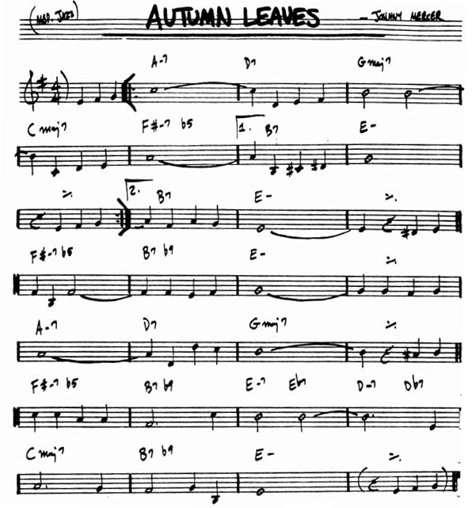

Jazz para novatos
He dicho que el desarrollo de una charla se asemeja al de las ideas musicales de un músico de jazz. Los siguientes capítulos explican con detalle distintos elementos de una charla y la manera de mejorarlos, apoyándose en esta analogía. Por ello, antes de extenderme con detalle en esos elementos y recurrir una y otra vez a este simil, y para aquellos que no estén familiarizados con la manera en la que «funciona» un encuentro de músicos de jazz (lo que se conoce como una jam session en el argot), doy en este capítulo una introducción sucinta.Si el lector tiene ya conocimientos a este respecto, puede saltar al siguiente capítulo,
En primer lugar, los participantes en una jam session han de conocer una serie de temas, los denominados standards. Un músico de jazz solvente debe conocer un buen número de estos temas, y con ellos dispone de una base compartida con el resto de músicos gracias a la que puede tocar con ellos aun siendo la primera vez que se encuentran. Los standards son, en resumen, el territorio común en el que se entienden los músicos de jazz.
Así, en una jam sessión, se eligen sobre la marcha los standards que van a tocarse (o están establecidas de antemano), y cada músico sabe de esta manera lo que ha de tocar y también lo que tocarán los demás.
Un standard tiene un aspecto como el de la siguiente partitura (no te preocupes si no sabes leer una partitura, luego explicaremos lo necesario para identificar las partes que nos interesan de cara a este texto):

Normalmente, la extensión de un standard así representado no es de más de una página, pero a partir de esa partitura sencilla se desarrollan minutos y minutos de música, siguiendo un esquema que en breve veremos.
La partitura contiene dos elementos principales. Por una parte, la melodía, representada mediante las notas musicales sobre el pentagrama. Por otra, la armonía, representada mediante las anotaciones sobre el pentagrama (en la partitura de la imagen, A-7, D7, GMaj7, etc.), que indican los acordes correspondientes a cada sección.
Ahora bien, ¿cómo se toca un standard de jazz a partir de esa partitura? La metodología es la siguiente:
En primer lugar, el grupo toca la pieza tal y como está escrita en la partitura. Los instrumentos solistas (saxofón, trompeta, etc.) tocan la melodía. Mientras tanto, los instrumentos rítmicos (piano, guitarra, contrabajo, etc.) proporcionan un contexto armónico para esa melodía, tocando los acordes correspondientes. Se suele repetir la partitura completa dos o tres veces.
Tras esas dos o tres repeticiones, los instrumentos rítmicos continúan tocando en base a los acordes y crean el mismo contexto armónico. Los instrumentos solistas (y también algunos instrumentos rítmicos) se van ahora turnando y, sobre ese contexto, improvisan. Cada solista improvisa durante toda la longitud de la pieza (es decir, toda la partitura, hasta que se vuelva a repetir la progresión de acordes desde el principio). También puede ser que disponga de varias repeticiones de toda la estructura, según se vea sobre la marcha o se haya acordado de antemano.
Cuando todos los solistas han hecho su parte de improvisación, vuelven a tocar juntos la melodía, pudiera ser que varias veces, y después concluyen la pieza.
Así es como se desarrolla un standard en una jam session al uso. ¿Y en qué se parece lo anterior a dar una charla? Lo vemos en el siguiente capítulo.